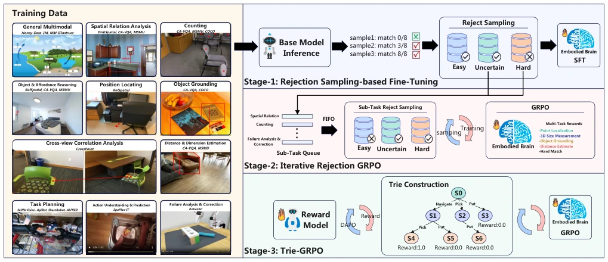
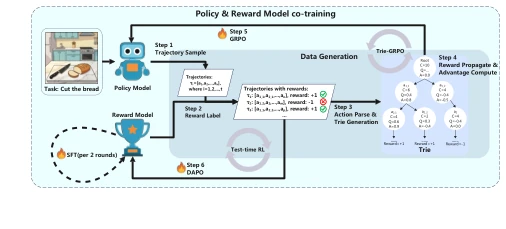
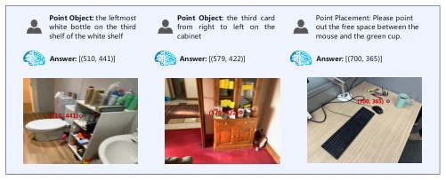
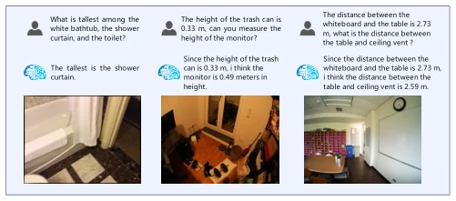
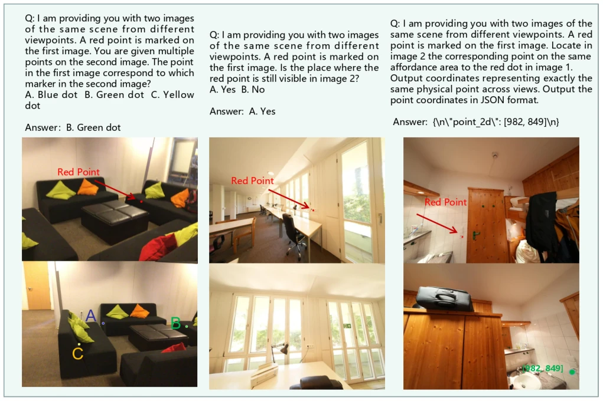
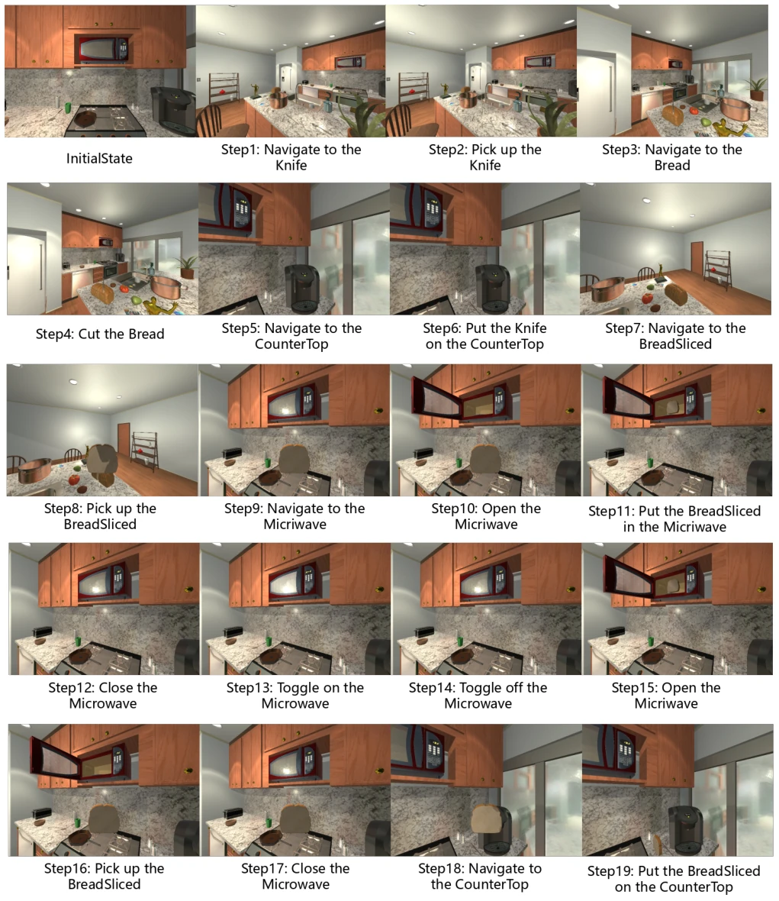

EmbodiedMind attempts to solve the three major chronic issues of "slow, biased, and poor" in embodied intelligence training using a "three-stage alchemy method", with a clear train of thought but slightly cumbersome operation. The highlight lies in using a prefix tree (Trie) to decompose the "scapegoating" problem in long-horizon planning, preventing the model from negating previously correct decisions due to a failure in the final step; this approach is indeed smarter than traditional GRPO. The data filtering mechanism (RSFT) also effectively improved sample density, avoiding wasting computing power on garbage data. However, the authors admitted the limitations of "unstructured data" a bit too late; in fact, the improvement on general multimodal tasks is limited, indicating that this "fine sorting" strategy might be "using a bull to kill a chicken" in the general domain, or even become a bottleneck due to large sampling overhead. Overall, this is an excellent work that is very capable in specific task planning but slightly "biased" in terms of generalizability, suitable for teams that do not want to search for a needle in a haystack in massive data.
Current embodied foundation model training faces three major pain points: first, low data utilization, where a large number of low-information samples lead to slow convergence; second, gradient contribution imbalance in multi-task training, where simple tasks are over-trained, difficult tasks are ignored, triggering a "seesaw effect"; third, the credit assignment problem in long-horizon planning, where traditional GRPO scores the entire trajectory, causing intermediate correct decisions to be penalized jointly due to subsequent errors [6]. Existing methods like DAPO [5] can filter zero-advantage samples, but lack task-level calibration and easily discard difficult samples; while tree search-based methods [7]-[9] can refine credit assignment, they face problems of combinatorial explosion and excessive computational overhead. In addition, models like RoboBrain 2.5 [11] rely on massive data (12 million trajectories) but still struggle to balance capabilities, urgently needing an efficient, balanced, and fine-grained training paradigm capable of handling long-range dependencies.
EmbodiedMind proposes a three-stage iterative training framework, aiming to improve efficiency through data filtering and hierarchical optimization. The first stage is RSFT (Rejection Sampling Fine-Tuning), using a reward model to filter candidate responses, retaining only "uncertain" and a small number of "simple" samples, eliminating "difficult" samples to prevent distribution collapse, and establishing robust behavioral priors. The second stage is IR-GRPO (Iterative Rejection GRPO), constructing task-specific FIFO queues for the RL stage, layered by difficulty. Through EMA adaptive sampling quotas and a "difficult sample re-queue" mechanism, dynamically balance effective gradients across different tasks, avoiding simple tasks dominating training. The third stage is the core innovation Trie-GRPO, introducing an Action Prefix Tree. It defines the "group" of policy optimization at the action prefix level rather than the complete trajectory level. In the tree structure, trajectory branches sharing the same historical prefix form independent subgroups, calculating local relative advantages. This allows intermediate correct actions to receive positive advantage signals even if they ultimately lead to task failure, effectively isolating interference from downstream errors. At the same time, this method avoids combinatorial explosion of traditional search trees through the tree structure, achieving a balance between step-level credit assignment and exploration efficiency.
The authors conducted evaluations on 18 benchmarks (covering general multimodal, 2D/3D spatial reasoning, task planning), where EmbodiedMind achieved an average score of 70.02%, significantly outperforming Qwen3-VL-8B and RoboBrain2.5-8B, with training data volume being only 1/24 of the latter. On the long-horizon planning benchmark VLM-PlanSim-99, performance improved by 30.31%. Ablation studies show that RSFT significantly improved data quality, IR-GRPO maintained more stable performance growth compared to DAPO, avoiding the degradation of spatial reasoning capabilities. Trie-GRPO improved by 4.83% over standard GRPO on long-horizon planning tasks. In tests on real robot (AgiBot A2) scenarios, the model outperformed the baseline on both task planning and failure analysis tasks. However, the experiments also exposed limitations: on unstructured general data, due to the huge cost of rejection sampling (accounting for 85% of time), the authors were forced to adopt random sampling, resulting in insignificant improvement in this field.
其他图片Other Figures

Fig. 1. The overall three-stage training framework of EmbodiedMind.

Fig. 2. Overview of the Trie-GRPO automated iterative training framework. The framework partitions tasks into batches and iteratively executes data generation and model co-evolution.

Fig. 5. Visualization of Point Localization tasks in the Refspatial bench- mark.

Fig. 6. Visualization of 3D Measurement tasks in the MSMU benchmark.

Fig. 7. Visualization of Cross-view point localization tasks in the CrossPoint benchmark.

Fig. 8. Visualization of long-horizon planning tasks in the AI2-THOR simulated environment; Task: Cut the bread, heat the slice of bread in the microwave, and then place the slice on the counter.